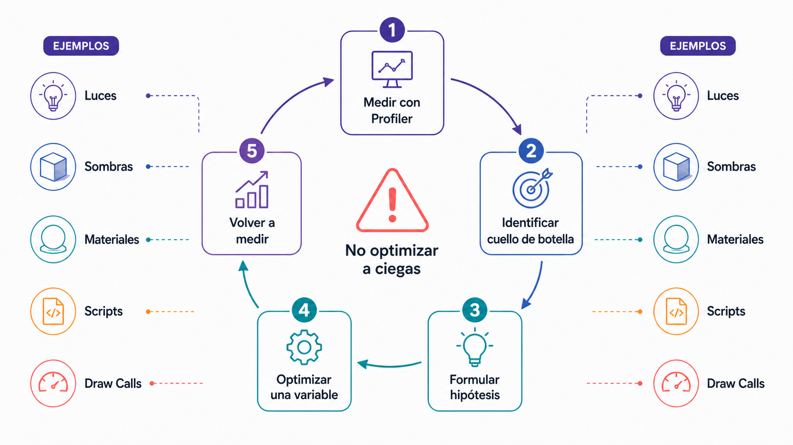
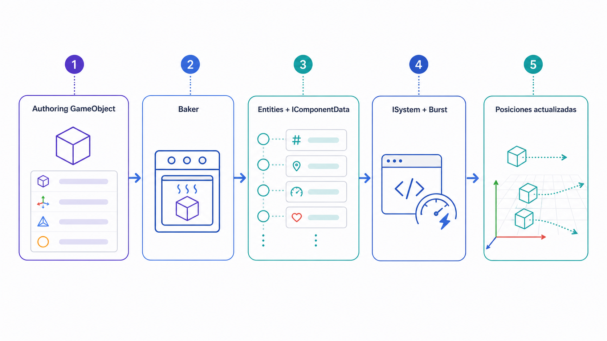
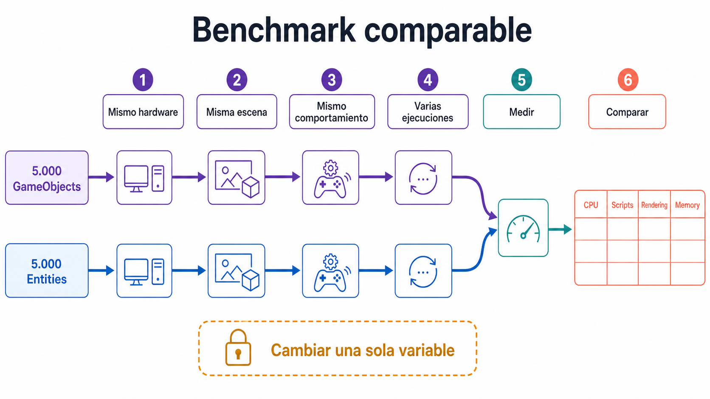

Prototipo funcional
No es una obra terminada, pero permite comprobar la idea central de la experiencia. Debe incluir una acción principal, una respuesta del sistema y una estructura clara de uso.
Integrar las capas previas en un prototipo funcional y experimentar con un primer ejemplo DOTS para comparar enfoques.
En este quinto laboratorio se consolida el trabajo de los laboratorios anteriores en una primera versión funcional del prototipo, la escena Project → Assets → _Project → Scenes → Prototipo_v1.unity. La primera parte limpia jerarquía, unifica nomenclatura, comprueba que la escena combina interacción, audio, UI y navegación, y realiza un primer análisis de rendimiento con Unity Profiler. La segunda parte introduce una escena independiente Project → Assets → _Project → Scenes → DOTS_demo.unity para una prueba técnica comparando 5.000 GameObjects con 5.000 Entities usando Entities, IComponentData, Baker, ISystem y Burst. El objetivo no es convertir el proyecto principal a DOTS, sino comprender cuándo puede ser útil un enfoque orientado a datos en experiencias inmersivas con muchos objetos.
No es una obra terminada, pero permite comprobar la idea central de la experiencia. Debe incluir una acción principal, una respuesta del sistema y una estructura clara de uso.
Proceso de ajustar una escena para mejorar su rendimiento. En XR es especialmente importante porque una baja tasa de fotogramas puede generar incomodidad o mareo.
Herramienta de Unity para analizar el rendimiento de una escena. Identifica problemas de CPU, renderizado, memoria, scripts, audio o físicas.
Versión ejecutable del proyecto para ordenador. Permite comprobar si el prototipo funciona fuera del editor.
Data-Oriented Technology Stack. Conjunto de tecnologías de Unity orientadas al procesamiento eficiente de grandes cantidades de datos.
Entity Component System. Arquitectura basada en entidades, componentes de datos y sistemas que procesan esos datos.
Unidad básica en ECS. No contiene lógica por sí misma; se define por los componentes que tiene.
Estructura de datos asociada a una entidad. Debe contener datos simples, no lógica compleja.
Clase que convierte información de un GameObject de autoría en componentes ECS durante el proceso de conversión.
Sistema ECS que procesa entidades y componentes.
Compilador de Unity que optimiza código para mejorar rendimiento, especialmente en sistemas y jobs orientados a datos.
Solo para la ampliación DOTS de Lab 5, antes del paso 16. La optimización con Profiler y GameObjects no requiere instalar DOTS.
| Paquete | Identificador | Comprobación |
|---|---|---|
| Entities | com.unity.entities | Versión estable 1.4.x; sin sufijos pre, preview o exp. |
| Burst | com.unity.burst | Si no está instalado, dejar que Entities lo incorpore como dependencia. |
| Collections | com.unity.collections | Dependencia resuelta por Package Manager. |
| Mathematics | com.unity.mathematics | Dependencia resuelta por Package Manager. |
| Entities Graphics | com.unity.entities.graphics | Solo si se necesita renderizado ECS. |
# ES: La línea siguiente inicia una categoría o nivel principal del esquema.
# EN: The following line starts a main category or level in the diagram.
Managers
# ES: La línea siguiente inicia una categoría o nivel principal del esquema.
# EN: The following line starts a main category or level in the diagram.
└── MANAGER_PrototypeState
# ES: La línea siguiente inicia una categoría o nivel principal del esquema.
# EN: The following line starts a main category or level in the diagram.
XR
# ES: La línea siguiente inicia una categoría o nivel principal del esquema.
# EN: The following line starts a main category or level in the diagram.
└── XR Origin
# ES: La línea siguiente inicia una categoría o nivel principal del esquema.
# EN: The following line starts a main category or level in the diagram.
Environment
# ES: La línea siguiente inicia una categoría o nivel principal del esquema.
# EN: The following line starts a main category or level in the diagram.
├── ENV_Floor
# ES: La línea siguiente inicia una categoría o nivel principal del esquema.
# EN: The following line starts a main category or level in the diagram.
├── ENV_Wall_Front
# ES: La línea siguiente inicia una categoría o nivel principal del esquema.
# EN: The following line starts a main category or level in the diagram.
├── ENV_Wall_Back
# ES: La línea siguiente inicia una categoría o nivel principal del esquema.
# EN: The following line starts a main category or level in the diagram.
├── ENV_Wall_Left
# ES: La línea siguiente inicia una categoría o nivel principal del esquema.
# EN: The following line starts a main category or level in the diagram.
├── ENV_Wall_Right
# ES: La línea siguiente inicia una categoría o nivel principal del esquema.
# EN: The following line starts a main category or level in the diagram.
├── ENV_Ceiling
# ES: La línea siguiente inicia una categoría o nivel principal del esquema.
# EN: The following line starts a main category or level in the diagram.
└── ENV_Props
# ES: La línea siguiente inicia una categoría o nivel principal del esquema.
# EN: The following line starts a main category or level in the diagram.
Interaction
# ES: La línea siguiente inicia una categoría o nivel principal del esquema.
# EN: The following line starts a main category or level in the diagram.
├── INT_MainObject
# ES: La línea siguiente inicia una categoría o nivel principal del esquema.
# EN: The following line starts a main category or level in the diagram.
├── INT_ActivationObject
# ES: La línea siguiente inicia una categoría o nivel principal del esquema.
# EN: The following line starts a main category or level in the diagram.
└── INT_ActivationSupport
# ES: La línea siguiente inicia una categoría o nivel principal del esquema.
# EN: The following line starts a main category or level in the diagram.
Audio
# ES: La línea siguiente inicia una categoría o nivel principal del esquema.
# EN: The following line starts a main category or level in the diagram.
├── AUDIO_Ambience
# ES: La línea siguiente inicia una categoría o nivel principal del esquema.
# EN: The following line starts a main category or level in the diagram.
└── AUDIO_InteractionFeedback
# ES: La línea siguiente inicia una categoría o nivel principal del esquema.
# EN: The following line starts a main category or level in the diagram.
UI
# ES: La línea siguiente inicia una categoría o nivel principal del esquema.
# EN: The following line starts a main category or level in the diagram.
└── UI_WorldPanel
# ES: La línea siguiente inicia una categoría o nivel principal del esquema.
# EN: The following line starts a main category or level in the diagram.
Lighting
# ES: La línea siguiente inicia una categoría o nivel principal del esquema.
# EN: The following line starts a main category or level in the diagram.
├── LIGHT_Directional
# ES: La línea siguiente inicia una categoría o nivel principal del esquema.
# EN: The following line starts a main category or level in the diagram.
└── LIGHT_Activation
# ES: La línea siguiente inicia una categoría o nivel principal del esquema.
# EN: The following line starts a main category or level in the diagram.
Debug
# ES: La línea siguiente inicia una categoría o nivel principal del esquema.
# EN: The following line starts a main category or level in the diagram.
└── DEBUG_TestObjects# ES: La línea siguiente inicia una categoría o nivel principal del esquema.
# EN: The following line starts a main category or level in the diagram.
MANAGER_ Sistemas de control
# ES: La línea siguiente inicia una categoría o nivel principal del esquema.
# EN: The following line starts a main category or level in the diagram.
XR_ Elementos XR
# ES: La línea siguiente inicia una categoría o nivel principal del esquema.
# EN: The following line starts a main category or level in the diagram.
ENV_ Entorno
# ES: La línea siguiente inicia una categoría o nivel principal del esquema.
# EN: The following line starts a main category or level in the diagram.
INT_ Objetos interactivos
# ES: La línea siguiente inicia una categoría o nivel principal del esquema.
# EN: The following line starts a main category or level in the diagram.
AUDIO_ Fuentes de audio
# ES: La línea siguiente inicia una categoría o nivel principal del esquema.
# EN: The following line starts a main category or level in the diagram.
UI_ Interfaces
# ES: La línea siguiente inicia una categoría o nivel principal del esquema.
# EN: The following line starts a main category or level in the diagram.
LIGHT_ Luces
# ES: La línea siguiente inicia una categoría o nivel principal del esquema.
# EN: The following line starts a main category or level in the diagram.
FX_ Efectos visuales
# ES: La línea siguiente inicia una categoría o nivel principal del esquema.
# EN: The following line starts a main category or level in the diagram.
PFB_ Prefabs
# ES: La línea siguiente inicia una categoría o nivel principal del esquema.
# EN: The following line starts a main category or level in the diagram.
MAT_ Materiales
# ES: La línea siguiente inicia una categoría o nivel principal del esquema.
# EN: The following line starts a main category or level in the diagram.
DEBUG_ Objetos temporales de prueba// Importa los tipos y APIs utilizados por este script.
using UnityEngine;
using UnityEngine.Events;
// Centraliza los estados principales y los eventos del prototipo.
public class PrototypeStateManager : MonoBehaviour
{
[Header("Estado del prototipo")]
// Indica si la experiencia ya comenzó.
[SerializeField] private bool experienceStarted;
// Indica si la interacción principal se completó.
[SerializeField] private bool mainInteractionCompleted;
// Indica si el recorrido completo del prototipo terminó.
[SerializeField] private bool prototypeCompleted;
[Header("Eventos")]
// Evento que notifica el inicio de la experiencia.
public UnityEvent onExperienceStarted;
// Evento que notifica que terminó la interacción principal.
public UnityEvent onMainInteractionCompleted;
// Evento que notifica la finalización del prototipo.
public UnityEvent onPrototypeCompleted;
// Marca el inicio de la experiencia y emite su evento una sola vez.
public void StartExperience()
{
// Comprueba si la experiencia ya había comenzado.
// Si ya está iniciada, evita volver a lanzar el mismo evento.
if (experienceStarted) return;
experienceStarted = true;
onExperienceStarted?.Invoke();
}
// Registra que la interacción principal ha finalizado.
public void CompleteMainInteraction()
{
// Comprueba si la interacción principal ya se había completado.
// Si ya terminó, evita registrar el resultado y emitir el evento otra vez.
if (mainInteractionCompleted) return;
mainInteractionCompleted = true;
onMainInteractionCompleted?.Invoke();
}
// Registra que el prototipo completo ha finalizado.
public void CompletePrototype()
{
// Comprueba si el prototipo ya se había marcado como completado.
// Si ya terminó, evita repetir las acciones asociadas al evento final.
if (prototypeCompleted) return;
prototypeCompleted = true;
onPrototypeCompleted?.Invoke();
}
}Creación del código: abrir un editor de código y guardar cada clase pública del ejemplo en el archivo .cs indicado dentro de Assets/_Project/Scripts (o su subcarpeta DOTS). Copiar el bloque correspondiente, guardar y volver a Unity. Esperar a la compilación y comprobar Window → General → Console. Añadir al Inspector únicamente scripts MonoBehaviour; los tipos ECS de datos y sistemas no se arrastran como componentes de GameObject.

Completar Instalación de DOTS (Entities + Dependencias): Entities estable 1.4.x, dependencias automáticas y Entities Graphics solo para el ejemplo visual. No reinstalar paquetes presentes.
// Importa los tipos y APIs utilizados por este script.
using Unity.Entities;
using Unity.Mathematics;
// Almacena la velocidad de una entidad como un vector de tres componentes.
public struct Velocity : IComponentData
{
// Guarda el vector de velocidad utilizado por el sistema.
public float3 Value;
}Creación del código: abrir un editor de código y guardar cada clase pública del ejemplo en el archivo .cs indicado dentro de Assets/_Project/Scripts (o su subcarpeta DOTS). Copiar el bloque correspondiente, guardar y volver a Unity. Esperar a la compilación y comprobar Window → General → Console. Añadir al Inspector únicamente scripts MonoBehaviour; los tipos ECS de datos y sistemas no se arrastran como componentes de GameObject.
// Importa los tipos y APIs utilizados por este script.
using Unity.Entities;
using Unity.Mathematics;
using UnityEngine;
// Convierte una velocidad configurada en el Inspector en datos ECS.
public class VelocityAuthoring : MonoBehaviour
{
// Expone la velocidad inicial para configurarla en el Inspector.
public Vector3 velocity = new Vector3(0f, 1f, 0f);
}
public class VelocityBaker : Baker<VelocityAuthoring>
{
// Convierte los datos del componente de autoría en datos ECS.
public override void Bake(VelocityAuthoring authoring)
{
Entity entity = GetEntity(TransformUsageFlags.Dynamic);
// Añade los datos calculados a la entidad convertida.
AddComponent(entity, new Velocity
{
Value = new float3(
authoring.velocity.x,
authoring.velocity.y,
authoring.velocity.z
)
});
}
}Creación del código: abrir un editor de código y guardar cada clase pública del ejemplo en el archivo .cs indicado dentro de Assets/_Project/Scripts (o su subcarpeta DOTS). Copiar el bloque correspondiente, guardar y volver a Unity. Esperar a la compilación y comprobar Window → General → Console. Añadir al Inspector únicamente scripts MonoBehaviour; los tipos ECS de datos y sistemas no se arrastran como componentes de GameObject.
// Importa los tipos y APIs utilizados por este script.
using Unity.Burst;
using Unity.Entities;
using Unity.Mathematics;
using Unity.Transforms;
[BurstCompile]
// Mueve las entidades con Velocity mediante un sistema ECS.
public partial struct VelocityMoveSystem : ISystem
{
// Procesa las entidades correspondientes durante cada actualización ECS.
public void OnUpdate(ref SystemState state)
{
float deltaTime = SystemAPI.Time.DeltaTime;
float elapsedTime = (float)SystemAPI.Time.ElapsedTime;
// Recorre todos los elementos que devuelve la consulta.
foreach (var (transform, velocity) in
SystemAPI.Query<RefRW<LocalTransform>, RefRO<Velocity>>())
{
LocalTransform currentTransform = transform.ValueRO;
float wave = math.sin(elapsedTime + currentTransform.Position.x * 0.2f);
currentTransform.Position += velocity.ValueRO.Value * deltaTime;
currentTransform.Position.y = math.abs(wave) * 2f + 0.5f;
transform.ValueRW = currentTransform;
}
}
}Creación del código: abrir un editor de código y guardar cada clase pública del ejemplo en el archivo .cs indicado dentro de Assets/_Project/Scripts (o su subcarpeta DOTS). Copiar el bloque correspondiente, guardar y volver a Unity. Esperar a la compilación y comprobar Window → General → Console. Añadir al Inspector únicamente scripts MonoBehaviour; los tipos ECS de datos y sistemas no se arrastran como componentes de GameObject.

// ===== GameObjectMover.cs =====
// Importa los tipos y APIs utilizados por este script.
using UnityEngine;
// Compara el movimiento tradicional de GameObjects con la prueba ECS.
public class GameObjectMover : MonoBehaviour
{
// Controla la velocidad de la animación.
[SerializeField] private float speed = 1f;
// Controla la altura máxima del movimiento.
[SerializeField] private float amplitude = 2f;
// Conserva la posición inicial del objeto.
private Vector3 startPosition;
// Desfase aleatorio que evita que todos los objetos se muevan igual.
private float offset;
// Guarda los valores iniciales antes de comenzar la animación.
private void Start()
{
startPosition = transform.position;
offset = Random.Range(0f, 100f);
}
// Unity ejecuta este método una vez por frame.
private void Update()
{
float y = Mathf.Abs(Mathf.Sin(Time.time + offset)) * amplitude + 0.5f;
transform.position = new Vector3(
startPosition.x,
y,
startPosition.z
);
}
}
// ===== GameObjectSpawner5000.cs =====
using UnityEngine;
public class GameObjectSpawner5000 : MonoBehaviour
{
// Referencia el objeto que se utilizará como plantilla.
[SerializeField] private GameObject prefab;
// Define cuántas instancias se crearán.
[SerializeField] private int amount = 5000;
// Define la separación entre elementos de la cuadrícula.
[SerializeField] private float spacing = 0.25f;
// Guarda los valores iniciales antes de comenzar la animación.
private void Start()
{
int side = Mathf.CeilToInt(Mathf.Sqrt(amount));
// Repite el bloque para crear o actualizar la cantidad solicitada de elementos.
for (int i = 0; i < amount; i++)
{
int x = i % side;
int z = i / side;
Vector3 position = new Vector3(
x * spacing,
0.5f,
z * spacing
);
// Crea una instancia del prefab en la posición y rotación calculadas.
GameObject instance = Instantiate(
prefab,
position,
Quaternion.identity
);
instance.AddComponent<GameObjectMover>();
}
}
}Creación del código: abrir un editor de código y guardar cada clase pública del ejemplo en el archivo .cs indicado dentro de Assets/_Project/Scripts (o su subcarpeta DOTS). Copiar el bloque correspondiente, guardar y volver a Unity. Esperar a la compilación y comprobar Window → General → Console. Añadir al Inspector únicamente scripts MonoBehaviour; los tipos ECS de datos y sistemas no se arrastran como componentes de GameObject.
// ===== EntitySpawnerData.cs =====
// Importa los tipos y APIs utilizados por este script.
using Unity.Entities;
// Define y ejecuta la creación masiva de entidades a partir de un prefab.
public struct EntitySpawnerData : IComponentData
{
// Referencia el objeto que se utilizará como plantilla.
public Entity Prefab;
// Define cuántas instancias se crearán.
public int Amount;
// Define la separación entre elementos de la cuadrícula.
public float Spacing;
}
// ===== EntitySpawnerAuthoring.cs =====
using Unity.Entities;
using UnityEngine;
public class EntitySpawnerAuthoring : MonoBehaviour
{
// Referencia el objeto que se utilizará como plantilla.
public GameObject prefab;
// Define cuántas instancias se crearán.
public int amount = 5000;
// Define la separación entre elementos de la cuadrícula.
public float spacing = 0.25f;
}
public class EntitySpawnerBaker : Baker<EntitySpawnerAuthoring>
{
// Convierte los datos del componente de autoría en datos ECS.
public override void Bake(EntitySpawnerAuthoring authoring)
{
Entity entity = GetEntity(TransformUsageFlags.None);
// Añade los datos calculados a la entidad convertida.
AddComponent(entity, new EntitySpawnerData
{
Prefab = GetEntity(authoring.prefab, TransformUsageFlags.Dynamic),
Amount = authoring.amount,
Spacing = authoring.spacing
});
}
}
// ===== EntitySpawnerSystem.cs =====
using Unity.Burst;
using Unity.Entities;
using Unity.Mathematics;
using Unity.Transforms;
[BurstCompile]
public partial struct EntitySpawnerSystem : ISystem
{
// Procesa las entidades correspondientes durante cada actualización ECS.
public void OnUpdate(ref SystemState state)
{
EntityCommandBuffer ecb = new EntityCommandBuffer(Unity.Collections.Allocator.Temp);
// Recorre todos los elementos que devuelve la consulta.
foreach (var (spawner, entity) in
SystemAPI.Query<RefRO<EntitySpawnerData>>()
.WithEntityAccess())
{
int amount = spawner.ValueRO.Amount;
float spacing = spawner.ValueRO.Spacing;
int side = (int)math.ceil(math.sqrt(amount));
// Repite el bloque para crear o actualizar la cantidad solicitada de elementos.
for (int i = 0; i < amount; i++)
{
int x = i % side;
int z = i / side;
// Crea una instancia del prefab en la posición y rotación calculadas.
Entity instance = ecb.Instantiate(spawner.ValueRO.Prefab);
LocalTransform transform = LocalTransform.FromPosition(
new float3(
x * spacing,
0.5f,
z * spacing
)
);
ecb.SetComponent(instance, transform);
}
ecb.DestroyEntity(entity);
}
// Aplica al EntityManager todas las operaciones almacenadas en el buffer.
ecb.Playback(state.EntityManager);
// Libera la memoria temporal utilizada por el buffer de comandos.
ecb.Dispose();
}
}
Hay interacción, audio y UI, pero no existe una secuencia comprensible.
Los objetos se han ido creando sin grupos ni nomenclatura.
Se está observando todo a la vez.
La escena no está añadida al build, hay errores de compilación, faltan referencias o el proyecto usa input/XR configurado solo para editor.
La versión de Unity no muestra el paquete en Unity Registry, hay problema de conexión o versión incompatible.
Faltan usings (Unity.Entities, Unity.Transforms, Unity.Mathematics), versión del paquete Entities diferente o API modificada entre versiones.
El prefab no tiene mesh o material, no se ha convertido correctamente, la cámara no apunta a las entidades, están fuera del campo de visión o falta LocalTransform.
No tienen componente Velocity, el sistema no se ejecuta, falta LocalTransform, el valor de velocidad es cero o Burst/Entities no han compilado correctamente.
El cuello de botella está en renderizado y no en scripts, los objetos tienen materiales/meshes demasiado costosos, la GPU limita ambas pruebas o se están ejecutando las dos a la vez.
Test de rendimiento. Crear dos pruebas separadas dentro de DOTS_demo: Prueba A — 5.000 GameObjects con movimiento mediante Update(); Prueba B — 5.000 Entities con Velocity + ISystem + Burst.
La visita a la página se registra como progreso de lectura. Esta confirmación registra la sesión como completada.